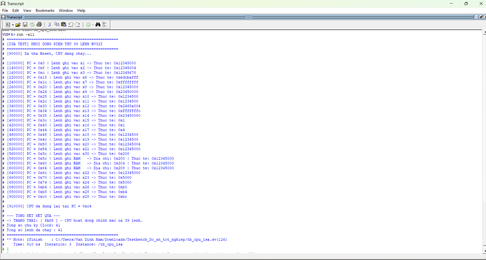

Tổng quan
Mục tiêu thiết kế
Hệ thống gồm CPU RISC-V RV32I subset, bộ nhớ lệnh, bộ nhớ dữ liệu, IO LED và lõi AES chuẩn. CPU điều khiển AES bằng lệnh load/store thông qua memory-mapped register, sau đó xuất kết quả ra LED để quan sát trên board.
Kiến trúc
CPU giao tiếp AES như một ngoại vi bộ nhớ
`CPU.v` giải mã vùng địa chỉ `0x800000xx` để chọn AES accelerator, đồng thời chặn RAM nội bộ khi truy cập AES hoặc LED IO. Điều này giúp mô phỏng sạch hơn và tránh ghi nhầm vào DataMemory.
Mô phỏng
Regression bằng QuestaSim
Bộ test gồm một test ISA cho toàn bộ tập lệnh CPU đang hỗ trợ và một test SoC AES kiểm tra CPU ghi key/block, chờ `ready/valid`, đọc ciphertext và xuất kết quả ra LED register 32-bit.
powershell -ExecutionPolicy Bypass -File ".\Simulation Scripts\run_questa_all.ps1"
TEST_PASS tb_cpu_isa
TEST_PASS tb_cpu_aes

FPGA
Quan sát 32-bit qua LEDR
Vì DE10 chỉ có 10 LED đỏ, `SW[9:8]` được dùng để chọn byte của thanh ghi LED 32-bit. `LEDR[9:8]` hiển thị bank đang chọn, còn `LEDR[7:0]` hiển thị byte dữ liệu tương ứng.
Tài nguyên